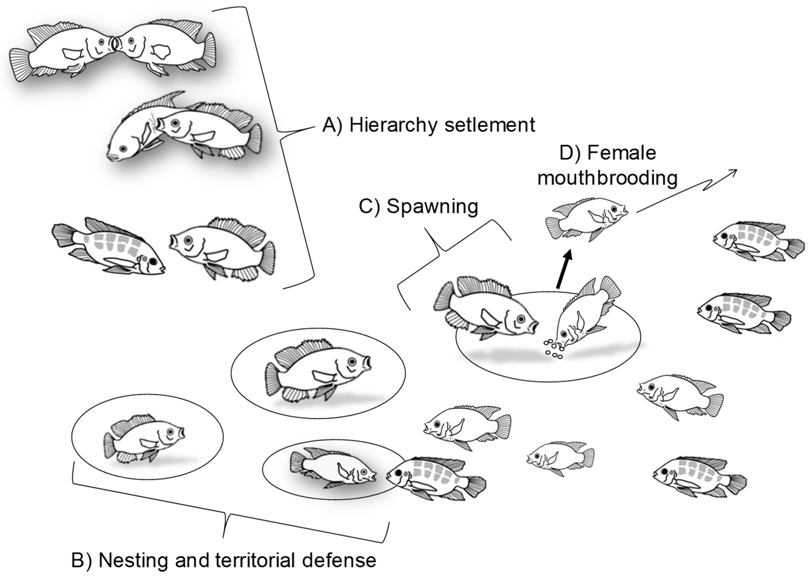
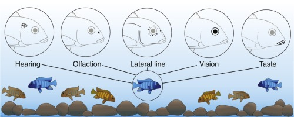

Fish behavior encompasses a wide range of actions and interactions that reflect their biological needs, social dynamics, and responses to environmental stimuli. Understanding fish behavior is crucial for providing optimal care in aquariums, ponds, and natural habitats. Here are some key aspects of fish behavior
Feeding Behavior and Social Behavior Foraging: Many fish species exhibit foraging behaviors to search for and consume food. They may sift through substrate, pick at algae, or chase after prey.
Feeding Aggression: Some fish display territorial or aggressive behavior during feeding times, competing for food resources.
Food Preferences: Fish may have specific dietary preferences based on their species, habitat, and natural diet. Hierarchy and Dominance: In social species, hierarchical structures often exist, with dominant individuals exerting control over subordinate members.
Schooling or Shoaling: Many fish form schools or shoals for protection, navigation, and reproductive purposes. These groups provide safety in numbers and facilitate communication.
Territoriality: Some fish are territorial and defend specific areas within their habitat from intruders. Territories are often established for breeding, feeding, or shelter.

Reproductive Behavior and Environmental Responses Courtship Displays: Fish engage in elaborate courtship rituals to attract mates, establish pair bonds, and initiate spawning.
Nesting Behavior: Certain species build nests or breeding sites to deposit eggs and protect offspring from predators.
Parental Care: In some fish species, one or both parents provide care for eggs and juveniles, including nest guarding, fanning, and egg retrieval. Light and Photoperiod: Fish may exhibit diurnal or nocturnal activity patterns in response to natural light cycles. Photoperiod influences feeding, breeding, and migration behaviors.
Water Quality: Changes in water temperature, pH, oxygen levels, and pollutant concentrations can affect fish behavior, metabolism, and overall health.
Habitat Preference: Fish exhibit preferences for specific habitats based on water depth, substrate type, vegetation density, and water flow rates.

Communication, Signaling, Stress and Aggression Visual Signals: Fish use body movements, color changes, fin displays, and postures to communicate with conspecifics and other species.
Chemical Signals: Chemical cues, such as pheromones and alarm substances, play a role in social recognition, predator avoidance, and reproductive signaling.
Acoustic Communication: Some fish produce sounds through vocalizations, stridulation, or fin movements to convey information and establish territory. Stress Responses: Fish may exhibit behavioral changes, such as reduced activity, hiding, or erratic swimming, in response to stressors such as water quality fluctuations, predation risk, or handling.
Aggression and Conflict Resolution: Aggressive interactions, including fin-nipping, chasing, and fin displays, occur during territorial disputes, competition for resources, and dominance hierarchies.